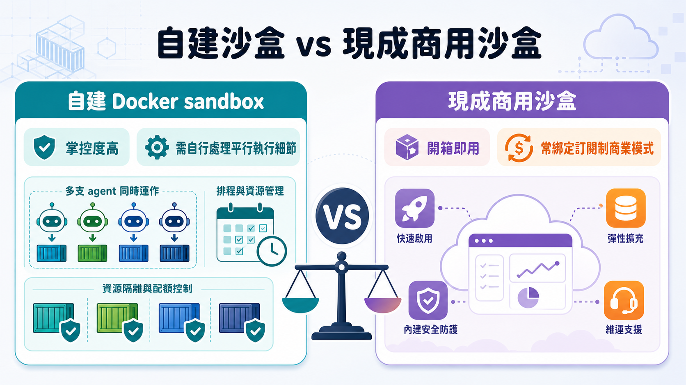
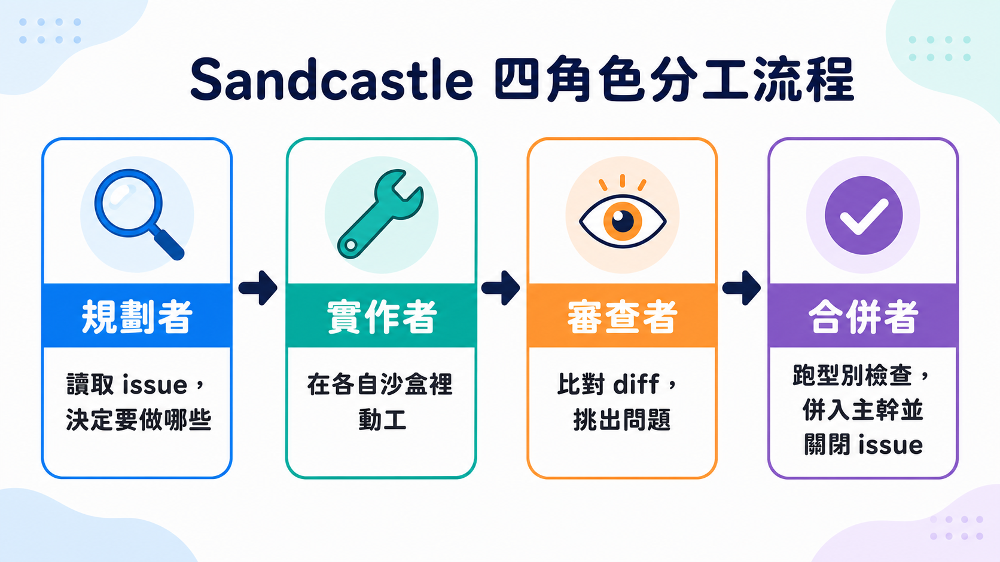

Matt Pocock 講過一次踩雷經驗：讓 Claude Code 開 Yolo 模式全自動跑，結果它在系統上做出瘋狂的事，包括刪掉使用者的 home 目錄。如果是在企業環境，情況可能更難看——程式碼被外洩、資料被送到不明的第三方服務。這不是危言聳聽的假設情境，是他在嘗試「讓 coding agent 徹底 AFK（離開電腦也能跑）」這半年裡真實撞到的牆。
這句話值得停下來想一下：我們常以為「自動化」的敵人是效率，但這裡的敵人其實是信任邊界。一支 agent 要嘛乖乖每一步都跳出來問你要不要授權，把你綁在電腦前當簽核章；要嘛你乾脆把權限全部放開，賭它不會犯下無法挽回的錯。過去半年 Matt 想做的事，說穿了就是要讓好幾支 agent 同時在背景跑——處理 backlog、寫功能、做 QA、彼此平行作業——但只要牽涉到「他要不要動你的系統」這件事，自動化就會卡在人工核准這一關，前功盡棄。
兩條死路

市面上不是沒有解法，只是每一個都有代價。他認真試過的是 Docker sandbox，親手搭過之後發現拿來做 AFK 這種長時間、多支 agent 平行跑的場景，問題多到他懶得細數。轉頭去看現成工具，幾乎每一家都想順便賣你一份訂閱服務——你不是在買一個沙盒環境，你是在被綁進一套商業模式。他要的東西其實很單純：一個 TypeScript 函式，呼叫的時候只要說「用這個 agent，在這個沙盒裡，跑這個 prompt」，就這樣，不多不少。找不到，他就自己寫了一個，叫 Sandcastle——一支開源的 TypeScript 函式庫，專門拿來在隔離沙盒裡指揮 AI coding agent。
拆開來看，其實只是四個角色分工

Sandcastle 的核心 API 小到有點反高潮：Sandcastle.run，傳入 agent、傳入 sandbox、傳入 prompt。任何一個他的開源 repo 裡都藏著一個 .sandcastle 目錄，裡面一支 main.ts，滿滿都是這種呼叫。簡單到這個程度，卻能疊出相當複雜的系統——多支 agent 並排跑、agent 互相審查對方程式碼再合併回主幹，都只是這個函式的排列組合。
實際跑一次會更清楚它在解決什麼問題。npm install 之後執行 npx sandcastle init，它會先問你要用哪支 agent（這裡選 Claude Code），接著選沙盒供應商——目前內建幾種，自己實作一個也可以，示範裡選了最基本的 Docker。然後是 backlog 管理：AFK 的 agent 得知道「接下來要做什麼」，Matt 慣用 GitHub issues 當任務清單，並且只認一個特定標籤（sandcastle），避免把整個 issue tracker 都當成待辦事項亂搶。模板選了「有審查步驟的平行規劃者」這個最重的版本，於是系統一次生出一個 Dockerfile——裝好系統依賴、GitHub CLI、把 home 目錄改名成 agent、裝好 Claude Code——外加環境變數檔，要填 Anthropic API key 和 GitHub token。
拿掉包裝之後，整套流程其實是四種角色接力：規劃者讀取所有貼著標籤、目前沒被卡住的 issue，決定哪些現在可以動工，吐出一份包在 main.ts 抓出這份 JSON，對每一個要處理的 issue 各自開一個獨立沙盒交給實作者，實作者知道自己的分支名稱、issue 標題與編號，照著走；如果同時有一支以上的分支產出，就交給審查者——這裡有個從 Claude Skills 學來的小技巧值得一提：prompt 裡如果在一串反引號前面加一個驚嘆號，系統在組出最終 prompt 之前會先把這段當指令執行，所以 git diff 的結果會被直接嵌進審查用的 prompt 裡，而不是靠 agent 自己再跑一次指令去猜要比對什麼；最後所有分支連同對應的 issue 內容一起交給合併者，它跑型別檢查、處理可能的 merge conflict、把程式碼併回主幹，還順手在 GitHub issue 上留言關閉它。示範跑的任務只是「幫我搭一個用 Vitest、有型別檢查、用 Commander 寫簡單 CLI 的 TypeScript 專案」，不到幾分鐘，tsconfig、vitest.config、CLI 檔案就自己長出來，合併者的紀錄顯示它跑過型別檢查才進主幹。
這套設計真正賭的是什麼
表面上看，這是「幫 Claude Code 加個外殼」，但仔細看規劃者、實作者、審查者、合併者這四個角色會發現，Sandcastle 本身完全不規定你要用哪支模型——範例裡可以隨手把規劃者換成 Codex，審查者也可以換成另一支模型去對實作者的產出唱反調，甚至同時開好幾支不同 agent 各自做一份實作，再讓一支審查者從裡面挑最好的、或揉合出一份混合版。Matt 把這稱為「擁有自己的流程」的力量——它不是在賣你某一種模型或某一種沙盒，它賣的是「角色與模型解耦」這件事本身。
這裡藏著一個沒被明說、但值得挑出來看的假設：整條生產線上，從規劃、實作、審查到合併，四個角色全部是 AI，沒有任何一步是人類把關。審查者判斷「程式碼已經夠乾淨」，合併者判斷「型別檢查過了、可以併」，這些判斷本身也是機率性的產出，而不是保證。也就是說，Sandcastle 解決的其實不是「AI 會不會寫錯程式碼」，而是「就算 AI 會寫錯，系統該用什麼分工去攔截、去自我修正」——它把單一 agent 犯錯的風險，轉換成一整條角色鏈彼此校對的機率遊戲。這跟過去「工程師寫一次、力求正確」的直覺完全相反，更接近「先讓好幾份版本平行長出來，再挑一個活下來的」這種思路，好壞見仁見智，但這是理解這套工具時繞不開的一點。
落地之後，人在做什麼
最後回到最實際的畫面：agent 在跑的時候，Matt 說你可以盯著 log 看，也可以去泡杯茶，讓它自己做完工作。這句話輕描淡寫，卻正是整段敘事真正想交付的東西——工程師的角色從「逐行寫程式碼」挪到「設計 prompt、設計角色分工、設計何時該加審查」。他自己形容，這套設定讓他的產出速度「大幅提升」，而且整個系統對用哪支模型完全不挑，你想把這些分支變成 PR 流程而不是直接併入主幹，一樣行得通——因為終究，這就是一段普通的程式碼，只是恰好把 Claude Code、Codex 跟一套工作流接在一起，拼出了他口中的「迷你軟體工廠」。
至於這條路能走多遠、審查者與合併者的判斷究竟可不可靠，影片裡沒有給出長期數據，只有「我用得很開心」這樣的個人證言。這大概也是所有 AFK 工具現階段共同的處境：機制講得清楚，結果好不好，還是得靠每個人自己跑過才知道。